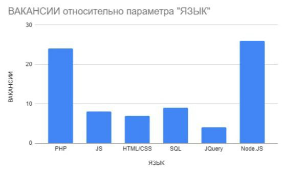

ВЕБ-РАЗРАБОТЧИК
специалист, который разрабатывает, тестирует, исправляет, обновляет, совершенствует сайты, веб-сервисы и мультимедийные приложения с помощью языков программирования. Если объяснять простыми словами, то это программист, который занимается тем, что создает сайты и делает все, чтобы они правильно работали.
История специальности
История профессии веб-разработчика началась в 1990 году, когда британский изобретатель Тим Бернерс-Ли представил миру революционный проект "Всемирная паутина" (World Wide Web), в рамках которого он разработал первый сайт. С этого момента технологии начали стремительно развиваться, и спустя несколько лет появился полноценный браузер Mosaic, язык разметки HTML, каскадные таблицы стилей CSS, языки программирования JavaScript, C и . Некоторое время единого синтаксиса не существовало, что вызывало сложности в работе программистов.
Прорывом в данной отрасли стало появление скриптового языка PHP. С его помощью веб-страницы превратились из статичных текстов в динамичные изображения с кнопками, формами, анимацией. Красивые и удобные сайты начали пользоваться популярностью.
Иметь собственную страницу в интернете хотели не только крупные корпорации, но и простые пользователи. За последние 30 лет IT-отрасль стала одной из ведущих, а веб-разработчики потребовались в разных областях: от интернет-маркетинга до искусственного интеллекта.
Направления в веб-разработке
|
специалист, который работает с внутренними частями сайта: пишет код на различных языках, отвечает за бесперебойную работу сайта, организацию технических процессов и базу данных. Разработчик по бек-энду использует следующий инструментарий: разные языки программирования (PHP, Perl, Java, Python, Ruby), фреймворки (Kohana, Codeigniter, Yii), а также MySQL, для сбережения данных. |
специалист, который работает над визуальной стороной сайта. Он переводит дизайн-проект в код. Чтобы внешняя сторона сайта корректно функционировала и везде отображались правильно картинки. Его основные инструменты - CSS, HTML, JavaScript. Этот перечень дополняется еще целым перечнем программ, предназначенных для улучшения работы сайта: Bootstrap, jQuery, AnguarJs, LESS, Sass/SCss и др. |
профессионал, который умеет выполнять задачи backend и frontend-разработчика. Таких мастеров достаточно мало, потому что очень тяжело освоить весь спектр знаний. |
Навыки и Умения frontend разработчика
SOFT SKILLS
- Креавтивность
- Умения убеждать
- Умения работать в команде
- Тайм-менеджмент
- Адаптируемость
HARD SKILLS
- Навыки работы с облачными хостингами - AWS, GCP, Azure
- Навыки работы с алгоритмами искусственного интеллекта
- Принятие решений для решения проблем
- Управления командами
- UX-design
Популярные языки и технологии для frontend-разработки
Самые популярные языки и технологии для frontend-разработки на данный момент(2022, 8 июня)
HTML - cтандартизированный язык гипертекстовой разметки документов для просмотра веб-страниц в браузере. Веб-браузеры получают HTML документ от сервера по протоколам HTTP/HTTPS или открывают с локального диска, далее интерпретируют код в интерфейс, который будет отображаться на экране монитора.
CSS - формальный язык описания внешнего вида документа (веб-страницы), написанного с использованием языка разметки (чаще всего HTML или XHTML). Также может применяться к любым XML-документам, например, к SVG или XUL.
React - JavaScript-библиотека с открытым исходным кодом для разработки пользовательских интерфейсов.
JavaScript(JS) - мультипарадигменный язык программирования. Поддерживает объектно-ориентированный, императивный и функциональный стили.
PHP - скриптовый язык общего назначения, интенсивно применяемый для разработки веб-приложений.
Плюсы и минусы професии

ADVANTAGES
- востребованность на рынке труда
- творческая работа, так как каждая задача уникальна, и для ее решения существует несколько способов
- возможность совмещения с учебой
- не всегда требуется диплом
- возможность удаленной работы
DISADVANTAGES
- ненормированный рабочий день
- сидячая работа
- большая нагрузка на зрение, что может привести к его ухудшению
- иногда приходится работать «в стол» и переделывать, так как требования меняются на ходу
- необходимо постоянно обучаться, потому что все быстро устаревает – это минус только для тех, кто не любит учиться
Сколько получают веб-разработчики?
Уровень зарплаты зависит не только от опыта, но и от основного языка программирования. Одни популярны и просты в освоении, другие встречаются реже и применяются для решения узких задач. Поговорим о более распространенных.
Уровни специалистов:
Junior - знает языки программирования и пишет несложный рабочий код, который проверяют старшие коллеги. Опыта мало – 0-1,5 года. Пока не представляет процесс разработки целиком, выполняет полученные задания.
Middle - опыт 1-3 года. Обычно есть проекты, которые сделал полностью самостоятельно. Может проводить разработку без лишнего контроля, знает лучшие практики своих языков. Умеет проверять и корректировать чужой код.
Senior - стаж от 4 лет, но важнее богатый опыт. Видит разработку с точки зрения всех участников: от менеджеров до младших коллег. Способен предлагать глобальные решения – например, смену набора (стека) технологий. Часто занимает руководящую должность.
| Направления | Количество вакансий | Junior | Middle | Senior |
|---|---|---|---|---|
| Fullstack-разработчик | 340 | 20 | 17 | 17 |
| Backend-разработчик | 1099 | 43 | 40 | 40 |
| Frontend-разработчик | 2159 | 66 | 55 | 55 |
Перспективы профессии
Есть три типа людей. Первых обвиняют в том, что без заминки часть интеллекта сидит на рабочем месте и помогает зарабатывать на жизнь, других — не получают, если обнаруживаются нейросети, которые начинают делать все рутинной работы для них, чтобы посвятить свою жизнь более занятой работе. А третья понимает, что замена человеческого труда машинным - процесс неизбежный, но если кого-то и можно лишить без работы, то точно не их, людей, типа программистов за фахом.
Остальные из нас так боятся клерков, даже если все дойдет до того, что без заминки люди в корпорациях смогут заменить программиста, который будет обслуживать нейрометрию, которая построена на самообучении этого самосовершенствования. Мощные гаджеты помогут все большему количеству программистов, и дальше их количество будет только расти